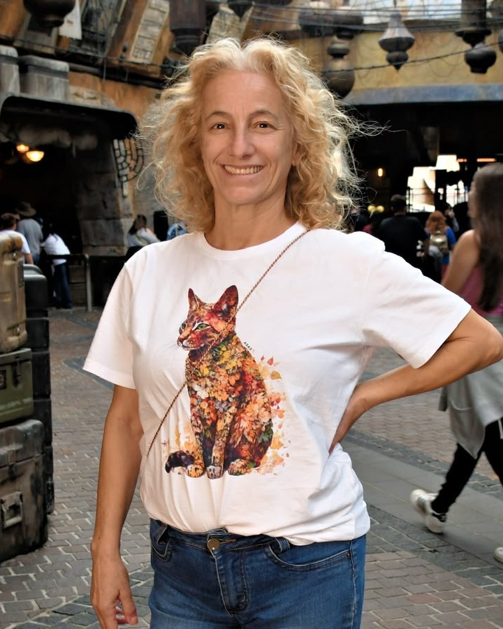

Todo cão e gato merece um lar.
Há quase 10 anos, o Miu Mais Pet resgata, cuida e encontra famílias para cães e gatos em São Paulo e na Baixada Santista.

Marcia Kulaif
Protetora de animais na Baixada Santista e fundadora do Miu Mais Pet.
Aqui no Brasil, somos chamadas de protetoras de animais. Nós resgatamos, cuidamos e encaminhamos para a adoção. Às vezes, passam-se anos e ainda estamos cuidando daquele bichinho que tiramos da rua correndo risco de vida.
Cuido de animais há quase 10 anos. Na pandemia, chegamos a quase 300 animais. Foi uma loucura: não tínhamos, e ainda não temos, ajuda do município nem do estado, e foi decidido que animal não era prioridade. Sem castrações gratuitas, tudo precisava ser pago, e todos nós nos endividamos. Assim começou a nossa história.
Hoje cuidamos de 70 a 80 animais no nosso abrigo, que está prestes a se mudar para um espaço maior. Em parceria com uma ONG, por meio de uma emenda parlamentar de uma deputada federal, castramos cerca de 600 animais. Também já fizemos mais de 250 cirurgias de alto custo e muito mais de mil adoções.
Esses animais sofrem de invisibilidade social: muitas vezes, o bichinho está doente na rua, e as pessoas mudam de calçada para não esbarrar nele. Nosso trabalho é fazer adoções responsáveis e levantar a bandeira da castração, para diminuir os mais de 30 milhões de animais que vivem nas ruas do Brasil.
"Fazemos um trabalho de formiguinha, que, no fundo, é um trabalho de elefante."Marcia Kulaif
Como adotar
As adoções acontecem nas nossas feiras, em pet shops parceiros. Lá você conhece os animais pessoalmente e já sai com seu novo amigo.
Venha a uma feira
As datas e os locais das feiras são divulgados no nosso Instagram. Cada feira acontece em um pet shop parceiro.
Conheça os animais
Converse com a nossa equipe, conheça cada cão e gato e descubra qual combina com a sua casa e a sua rotina.
Assine o termo pelo celular
Leve RG ou CNH e um comprovante de residência. Você preenche o termo de adoção no celular e leva seu novo amigo no mesmo dia.
Castração: para quem mora na Baixada Santista, a castração é gratuita com os nossos parceiros. Fora da Baixada, ela fica por conta do novo tutor. Depois, é só enviar o comprovante com a carteira de vacinação.
Sua doação vira cuidado
O Miu Mais Pet é um projeto independente e se mantém com doações. Qualquer valor ajuda a manter os animais saudáveis até encontrarem uma família.
- Ração e areia
- Vacinas e vermífugos
- Castrações e tratamentos
Doe via Pix
Confira o nome do recebedor no app do banco antes de confirmar.
Outras formas de ajudar
Nem toda ajuda é em dinheiro. Veja como você pode fazer parte do projeto.
Doe itens
Ração, areia, cobertas, caminhas e remédios fazem diferença todos os dias.
Seja lar temporário
Receba um animal em casa por um tempo, até ele encontrar a família definitiva.
Seja voluntário
Ajude nas feiras de adoção, no transporte dos animais ou com fotos e divulgação.
Compartilhe
Divulgar as feiras e os animais ajuda a levá-los até mais famílias.
Metade gato, metade cachorro, todo coração
O Miu Mais Pet é um projeto independente de proteção animal de São Vicente. Há quase 10 anos, resgatamos cães e gatos, cuidamos da saúde de cada um e procuramos a família certa para eles.
As feiras de adoção acontecem em pet shops parceiros, e cada adoção é registrada em um termo de guarda responsável. Para quem mora na Baixada Santista, a castração é gratuita com clínicas parceiras. Tudo isso é feito com a ajuda de voluntários, parceiros e doações.